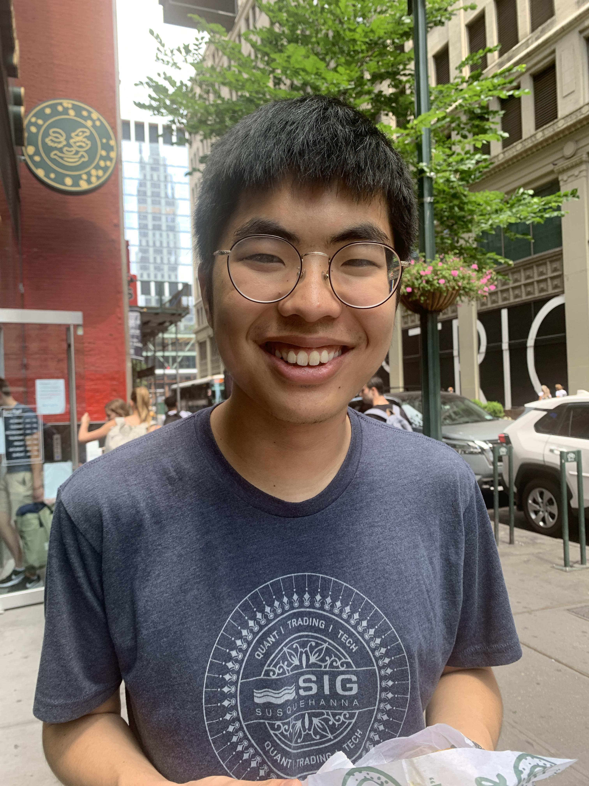
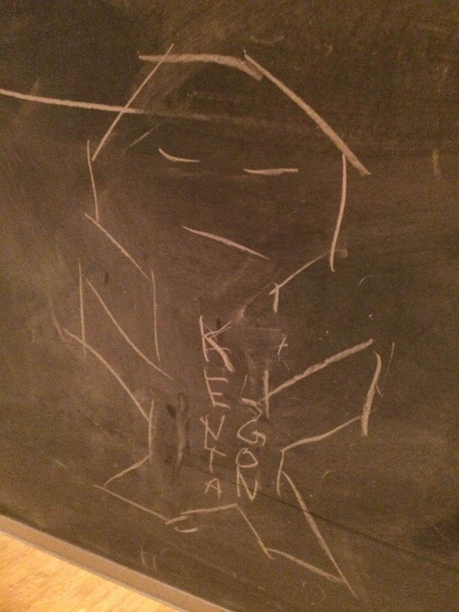

Kenta's Antics


Hi! My name is Kenta Suzuki, and I am a first-year graduate student studying mathematics at Princeton.
Previously, I was an undergraduate at MIT.I am particularly interested in representations of \(p\)-adic groups and geometric representation theory. In my free time, I enjoy running and drinking tea.
Email: kjsuzuki [at] princeton [dot] edu
This semester, I am organizing a seminar on quantum topology.
You can learn more about me in the other tabs.